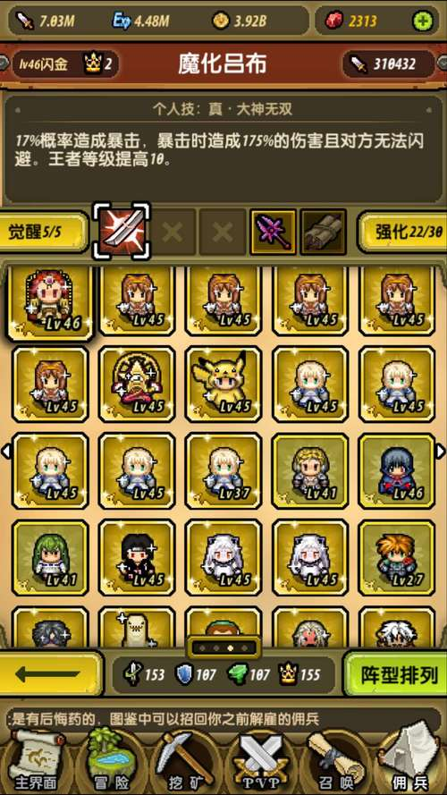
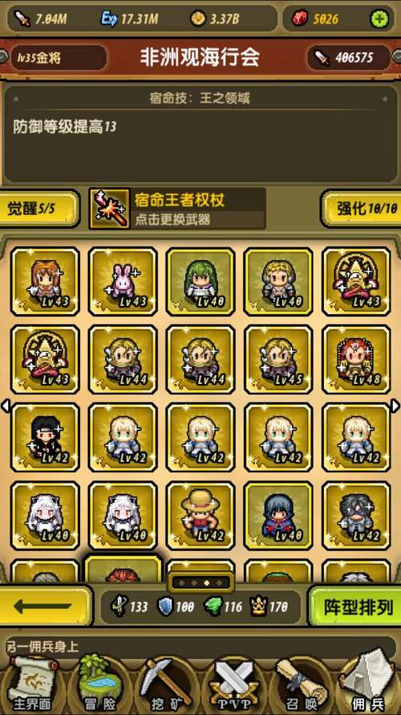
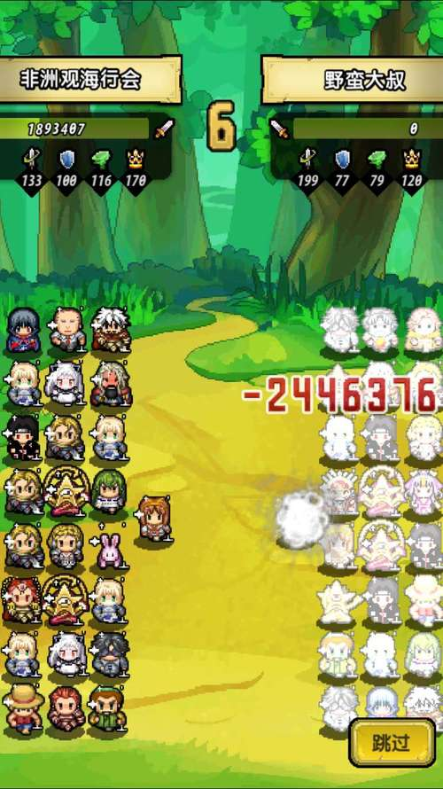
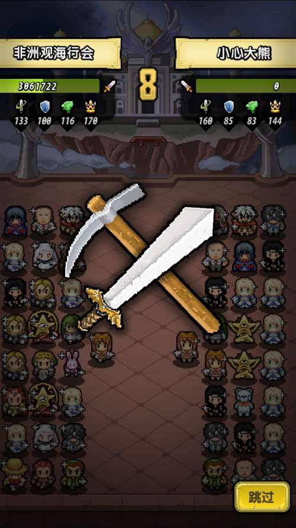

大家好，法老王沉寂许久，又给大家带来了大型攻略
只出了贞德的XJB流打到了第三（前两个没办法打）虽然7区没泰坦。
这次聚焦大家最近热议的XJB流。为了让大家成为一个有目标的XJB流
下面我给大家带来XJB流走向均衡混伤流的分析报告。
一、为何要组混伤流：
一般大家第一周都是先攻暴击流。（头七猛如虎。）
但是，宝具开到一半时。暴击流大概在4M以后开始势弱。
面对动则140防的防闪，和100防的纯粹。
暴击流相对较低的王者，和不稳定的输出（大多数还是需要无光补几率的）（鼬乱复制技能）。在内战时候“一点先攻就是爹”。想要拼过土豪和欧皇，实在太难。
而且暴击流的矿队属性太低。不适合打矿区boss（时间我一个多月才过啊）
所以大多数玩家，开始考虑转型，七拼八凑成了XJB流，转型纯粹和回复又舍不得培养了太多的暴击武将
那么如何才能合理利用资源转型？让XJB流变得威力强大呢？
法老王和小伙伴经过一个月的测试和模拟。找出了可行之路。
对于这套阵容，相比之下不需要你花大量资金，用现有XJB流直接换几个武将就行
尤其是中小R。没有贝尔，没有哈迪斯，你一样可以玩的666，对所有阵容都会是55开的胜率。
你不必担心区里有好多回复，有好多先攻。
这套阵容，任何突破属性都可以使用，也不用洗太多属性
用最小的资源来发挥你最大的优势。
最关键的是新出的小北和精通。
这让混合流成为最大赢家。因为我们4种属性全部需要。
一个小北（未突破）7 6 0 5 加上契约是9 6 2 7
四个小北（未突破）36 32 8 28 加上契约是 44 32 16 36
提供了巨额四维属性。每种属性都是非常合适混合流。可谓buff一大波。
关于未来的精通
精通需要的大量灵魂石。让单一武将的阵容很难开齐契约。（需要大量同类武将灵魂）
而混伤流，各种武将混搭。开契约也方便的多。（需要同一个武将灵魂石少）
而且各种佣兵的不同精通也提供各种四维。我们照单全收，不挑食，才是真正赢家。
二、介绍下我们的武将（最终版本）：
| 纯粹武将 | |
|---|---|
| 武将 | 说明 |
| 骑士王 | 6防 7王，算是半个属性将。带有高几率的稳定纯粹输出。（5-6个左右） |
| 回复武将 | |
|---|---|
| 武将 | 说明 |
| 魔王魔女组合 | 在稳定的闪避支撑下，有不俗的回复能力，同时也加了不少四维。（一组） |
| 圣女贞德 | 补几率，加续航，对战防闪时候有点坑爹（可不带，换骑士王或者亚瑟·戴恩） |
| 暴击武将 | |
|---|---|
| 武将 | 说明 |
| 金坷垃 | 物美价廉，加起来19%的暴击概率，还是相当给力的。（一组）拉拉也可以多带几个 |
| 亚瑟·戴恩 | 物美价廉，成长高。虽然宝具有点坑爹，但是因为混搭了16%的回复闪避属性还是需要一点的（2个左右） |
| 魔化吕布 | RMB武将性价比之王，15的王者，17%的暴击概率，有能力一定要搞一个。（中R毕业专属） |
| 四维属性武将 | |
|---|---|
| 武将 | 说明 |
| 蜀国三基友 | 平民玩家堆王的选择，虽然掉了不少防御，但是利大于弊。（一组） |
| 庞麦郎 | 支撑13先攻，带有5王，新版本情况下不如小北。（2-3个） |
| 亚瑟 | 大量防御，是克制先攻的极佳英雄。（1-2个） |
| 普京（路飞） | 大量王者（混搭3-4个）和小北混合使用 |
| 小北 | 各种大量属性，一个也挺好，四个满分。 |
| 备选武将池 | |
|---|---|
| 武将 | 说明 |
| 皮神 | 5%110的纯粹。带封印。不过也只能封印炮姐，拉拉，CC |
| 炮姐 | 说真的，其实很一般，被神话的英雄，1-2个实在无用。一排以上又太贵，我们可以不考虑。带着吧。也可以替换成庞麦郎，小北，普京，路飞等属性将（具体看突破属性） |
| 朱雀 | 也很一般，虽然我们四维均衡，复制什么技能都不亏，但是毕竟王者加的不多（1-2个，多了可以替换庞麦郎小北，普京，路飞） |
| 神兽草泥马 | 过渡使用。后期换掉。 |
| 三爷 | 过渡使用，阵容适应性不如亚瑟。 |
| 紫霞组合 | 后期拖战力严重。过渡使用 |
三、对于突破四维
我们首先考虑的王者和防御。
面对大行其道的暴击流，王者和防御是最好的应对措施。
面对最近崛起的防闪流（其实一直很强）王者也是最好的应对。
面对不温不火的纯粹流，也是需要堆王者来降低所受的伤害。
那么，突破属性是闪避，先攻怎么办
根据闪金的突破属性（因为闪金洗起来很麻烦），微调属性将，整合阵容。来达到模板四维
根据周围环境，可以多种选择。
60%纯粹24%暴击16%回复。应对各种流派均衡的
50%纯粹34%暴击 16%回复。应对暴击（纯粹）流比较多的
不要紧，阵容中加入了30%的暴击和16%的回复。
具体的调整。我们应该根据大多数闪金的突破属性。可以微调四维武将。
也可以自由切换宿命武器。也洗金色武将属性。（洗属性大坑，慎重）
混搭阵容模板
IOS 3区痞子神父。炮姐混搭流
被回复流大神飞鸟欺负的神父。研究了一个多月发现纯暴击走不通，怒而转型
优势是先攻高，暴击伤害很足。
四维均衡，遇到各种对手也有翻盘点
|

|

|
7区ghhh。1:1:1均衡混搭流
我师兄ghhh（观海行会）
阵容优势：王者高。四维稳定。基本出啥技能都不亏，但是爆发力稍弱
IOS 7 混伤创始人“歌神”大熊猫的阵容
这篇攻略就是他和我鼓捣出来的。这个也是没魔吕的阵容。四维属性比我自用的好的多，不过他也就差2.5K出魔吕。
偏向纯粹。暴击的爆发力也有。属于未完善阵容。等他氪出魔吕，再来更新。
自用贞德混搭流
这个和上面两个就有明显差距了。从四维可以看出，魔吕还是很有必要的。17%的技能可以下坷坷和金金补充属性将，还自带10王。不过由于亩产一千八这个神技，爆发力还是有的。
混伤流实战情况分析：
（感谢师兄ghhh提供截图）
防御王者压先攻：稳定的先攻流都会带上少量的骑士王，骑士王较高的技能几率成为了先攻流的诟病。先攻流很明显防御低，王者略低。在稳定防御和王者的压制下，我们拥有的先攻英雄提供的暴击几率和回复英雄的回复几率都会造成对先攻队的压制。即便出誓约之剑，我们也能打出较高的伤害，相同战力，实战胜率6：4。
|

|

|
纯粹闪避塠回复：作为一个标准恢复流，一定会带上补技能几率的英雄，狂三，玉兔，觉醒的熏，这些恢复力不强而且既能几率的英雄。在未命中的情况下，是跟不上均衡流的输出的。加上高王支撑的纯粹既能，可以做到压制他的防御和回复。相同战力 实战胜率5 5
暴击先攻破纯粹：纯粹流的主要英雄就是骑士王和普京了。没有先攻英雄支撑先攻，普遍先攻低，纯粹流靠的是高王压制，稳定的输出。而我们的均衡流在相对稳定的王者下，不会被有太多的压制，高先攻会保证我们有先出手的压制，爆击英雄也会对防御并不高的纯粹流造成较高的伤害。相同战力 实战胜率6 4
四、最后总结
暴击未死，变革不止。
单一流派的阵容都有弱点（战力碾压流除外）
最强的只有灵活多变的混伤流。
因为只有不断的调整，才有“最强”的阵容。
还犹豫什么，放下手中的CC,亚瑟。加入混合流的探索之路吧！